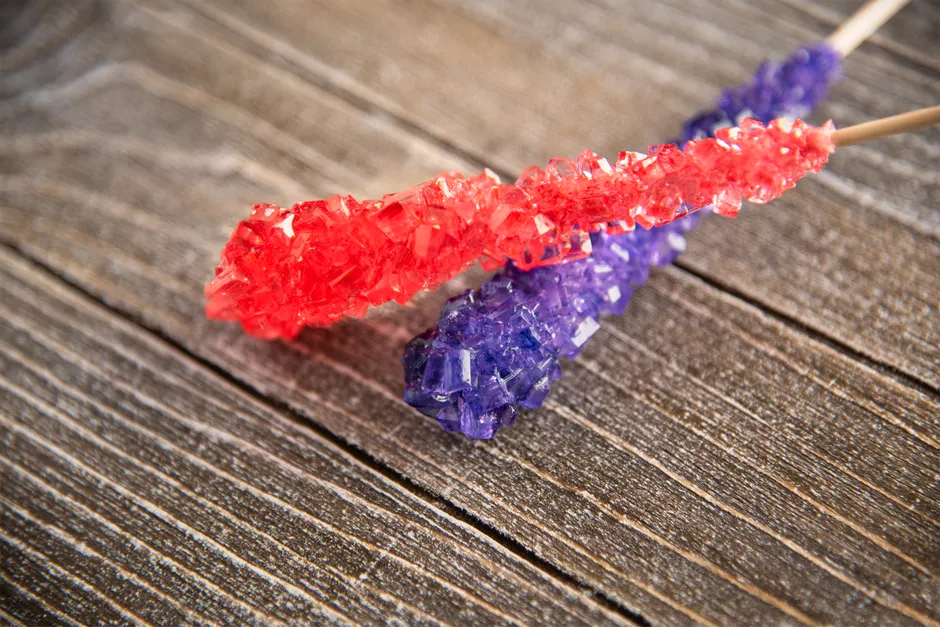

Rock Candy

Description
Rock candy is easy to make at home, it tastes great, and it's a fun recipe to do with kids.
Better yet, it doubles as a science experiment because you get to watch the sugar crystals grow.
It's also an excellent opportunity to get creative in the kitchen because the color and flavoring combinations you can create are endless.
INGREDIENTS
- 2 cups water
- 6 cups granulated sugar
- 2.5 g Cure #2 0.25%
- 0.45 g black pepper cracked; 0.045%
STEPS
- Gather the ingredients.
- Wet each wooden skewer with water and roll it in granulated sugar. This base layer gives the sugar crystals something to grab when they start forming. Set these aside to dry while you prepare the sugar syrup.
- Place the 2 cups of water in a medium-sized pan and bring it to a boil. Begin adding the sugar, 1 cup at a time, stirring after each addition. You will notice that it takes longer for the sugar to dissolve after each cup you add. Continue to stir and boil the syrup until all of the sugar has been added, and it is completely dissolved. Remove the pan from the heat.